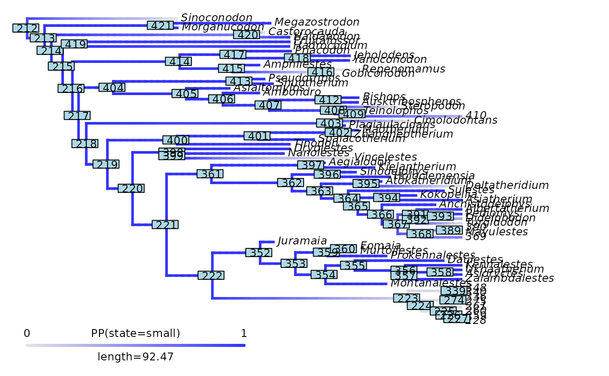
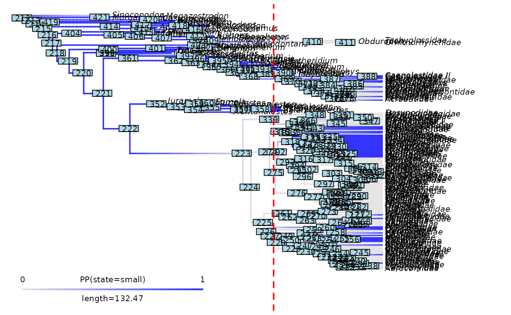
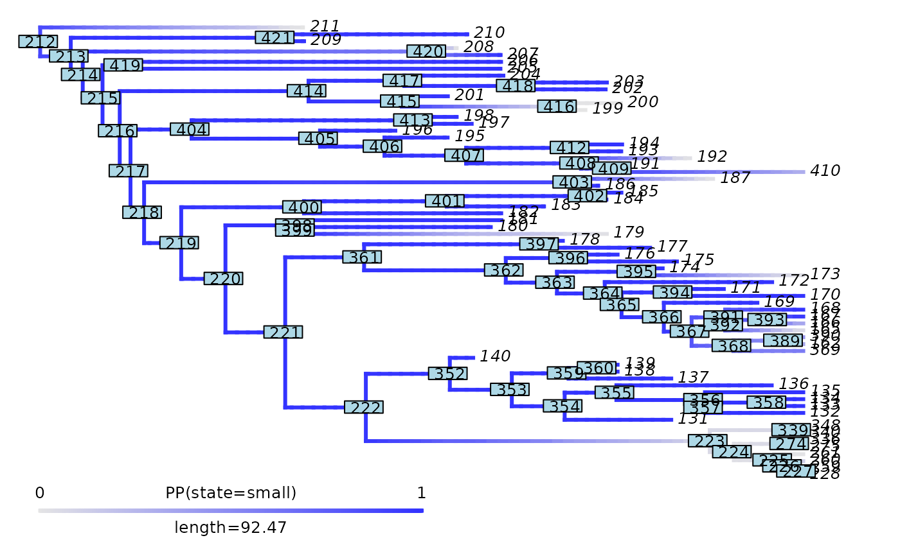

Cut the phylogeny and posterior probability mapping of a categorical trait for a given focal time in the past
Source:R/cut_densityMaps_for_focal_time.R
cut_densityMap_for_focal_time.RdCuts off all the branches of the phylogeny which are
younger than a specific time in the past (i.e. the focal_time).
Branches overlapping the focal_time are shorten to the focal_time.
Likewise, remove posterior probability mapping of the categorical trait for the cut off branches
by updating the $tree$maps and $tree$mapped.edge elements.
Arguments
- densityMap
Object of class
"densityMap", typically generated withphytools::densityMap(), that contains a phylogenetic tree and associated posterior probability mapping of a categorical trait. The phylogenetic tree must be rooted and fully resolved/dichotomous, but it does not need to be ultrametric (it can includes fossils).- focal_time
Numerical. The time, in terms of time distance from the present, for which the tree and mapping must be cut. It must be smaller than the root age of the phylogeny.
- keep_tip_labels
Logical. Specify whether terminal branches with a single descendant tip must retained their initial
tip.label. Default isTRUE.
Value
The function returns the cut densityMap as an object of class "densityMap" with three elements.
It contains a $tree element of classes "simmap" and "phylo". This function updates and adds multiple useful sub-elements to the $tree element.
* $maps An updated list of named numerical vectors. Provides the mapping of posterior probability of the state along each remaining edge.
* $mapped.edge An updated matrix. Provides the evolutionary time spent across posterior probabilities (columns) along the remaining edges (rows).
* $root_age Integer. Stores the age of the root of the tree.
* $nodes_ID_df Data.frame with two columns. Provides the conversion from the new_node_ID to the initial_node_ID. Each row is a node.
* $initial_nodes_ID Vector of character strings. Provides the initial ID of internal nodes. Used to plot internal node IDs as labels with ape::nodelabels().
* $edges_ID_df Data.frame with two columns. Provides the conversion from the new_edge_ID to the initial_edge_ID. Each row is an edge/branch.
* $initial_edges_ID Vector of character strings. Provides the initial ID of edges/branches. Used to plot edge/branch IDs as labels with ape::edgelabels().
The $col element describes the colors used to map each possible posterior probability value from 0 to 1000.
The $states element provide the name of the states. Here, the first value is the absence of the state labeled as "Not X" with X being the state.
The second value is the name of the state.
High posterior probability reflects high likelihood to harbor the state. Low probability reflects high likelihood to NOT harbor the state.
Details
The phylogenetic tree is cut for a specific time in the past (i.e. the focal_time).
When a branch with a single descendant tip is cut and keep_tip_labels = TRUE,
the leaf left is labeled with the tip.label of the unique descendant tip.
When a branch with a single descendant tip is cut and keep_tip_labels = FALSE,
the leaf left is labeled with the node ID of the unique descendant tip.
In all cases, when a branch with multiple descendant tips (i.e., a clade) is cut, the leaf left is labeled with the node ID of the MRCA of the cut-off clade.
The posterior probability mapping of a categorical trait is updated accordingly by removing mapping associated with the cut off branches.
Examples
# ----- Prepare data ----- #
# Load mammals phylogeny and data from the R package motmot included within deepSTRAPP
# Data source: Slater, 2013; DOI: 10.1111/2041-210X.12084
data("mammals", package = "deepSTRAPP")
# Obtain mammal tree
mammals_tree <- mammals$mammal.phy
# Convert mass data into categories
mammals_mass <- setNames(object = mammals$mammal.mass$mean,
nm = row.names(mammals$mammal.mass))[mammals_tree$tip.label]
mammals_data <- mammals_mass
mammals_data[seq_along(mammals_data)] <- "small"
mammals_data[mammals_mass > 5] <- "medium"
mammals_data[mammals_mass > 10] <- "large"
table(mammals_data)
#> mammals_data
#> large medium small
#> 36 83 92
# Produce densityMaps using stochastic character mapping based on an equal-rates (ER) Mk model
mammals_cat_data <- prepare_trait_data(tip_data = mammals_data, phylo = mammals_tree,
trait_data_type = "categorical",
evolutionary_models = "ER",
nb_simulations = 100,
plot_map = FALSE)
#>
#> 2025-10-22 14:30:40.003512 - Fit 1 evolutionary model(s): ER.
#>
#> ------ ER model ------
#>
#> GEIGER-fitted comparative model of discrete data
#> fitted Q matrix:
#> large medium small
#> large -0.006199429 0.003099714 0.003099714
#> medium 0.003099714 -0.006199429 0.003099714
#> small 0.003099714 0.003099714 -0.006199429
#>
#> model summary:
#> log-likelihood = -152.749035
#> AIC = 307.498071
#> AICc = 307.517210
#> free parameters = 1
#>
#> Convergence diagnostics:
#> optimization iterations = 100
#> failed iterations = 0
#> number of iterations with same best fit = 100
#> frequency of best fit = 1.000
#>
#> object summary:
#> 'lik' -- likelihood function
#> 'bnd' -- bounds for likelihood search
#> 'res' -- optimization iteration summary
#> 'opt' -- maximum likelihood parameter estimates
#>
#> 2025-10-22 14:30:41.64203 - Compare model fits.
#>
#> model logL k AIC AICc delta_AICc Akaike_weights rank
#> ER ER -152.749 1 307.4981 307.5172 0 100 1
#> 2025-10-22 14:30:41.644299 - Run simulations for stochastic mapping.
#>
#> make.simmap is sampling character histories conditioned on
#> the transition matrix
#>
#> Q =
#> large medium small
#> large -0.006199429 0.003099714 0.003099714
#> medium 0.003099714 -0.006199429 0.003099714
#> small 0.003099714 0.003099714 -0.006199429
#> (specified by the user);
#> and (mean) root node prior probabilities
#> pi =
#> large medium small
#> 0.3333333 0.3333333 0.3333333
#> Done.
#> 2025-10-22 14:30:58.042561 - Extract ACE as posterior sampling from stochastic mapping.
#> 2025-10-22 14:30:58.543378 - Create densityMaps by summarizing simulations of evolutionary history (simmaps).
#>
#> 2025-10-22 14:30:59.958097 - Posterior probability computed for edge n°100/420
#> 2025-10-22 14:31:00.929634 - Posterior probability computed for edge n°200/420
#> 2025-10-22 14:31:02.483016 - Posterior probability computed for edge n°300/420
#> 2025-10-22 14:31:03.605351 - Posterior probability computed for edge n°400/420
#> 2025-10-22 14:31:03.936945 - Posterior probabilities computed for State = large - n°1/3
#> 2025-10-22 14:31:05.293171 - Posterior probability computed for edge n°100/420
#> 2025-10-22 14:31:06.189517 - Posterior probability computed for edge n°200/420
#> 2025-10-22 14:31:07.302683 - Posterior probability computed for edge n°300/420
#> 2025-10-22 14:31:08.478921 - Posterior probability computed for edge n°400/420
#> 2025-10-22 14:31:08.833942 - Posterior probabilities computed for State = medium - n°2/3
#> 2025-10-22 14:31:10.194128 - Posterior probability computed for edge n°100/420
#> 2025-10-22 14:31:11.148545 - Posterior probability computed for edge n°200/420
#> 2025-10-22 14:31:12.283608 - Posterior probability computed for edge n°300/420
#> 2025-10-22 14:31:13.477003 - Posterior probability computed for edge n°400/420
#> 2025-10-22 14:31:13.842292 - Posterior probabilities computed for State = small - n°3/3
# Set focal time
focal_time <- 80
# Extract the density map for small mammals (state 3 = "small")
mammals_densityMap_small <- mammals_cat_data$densityMaps[[3]]
# ----- Example 1: keep_tip_labels = TRUE ----- #
# Cut densityMap to 80 Mya while keeping tip.label
# on terminal branches with a unique descending tip.
updated_mammals_densityMap_small <- cut_densityMap_for_focal_time(
densityMap = mammals_densityMap_small,
focal_time = focal_time,
keep_tip_labels = TRUE)
# Plot node labels on initial stochastic map with cut-off
phytools::plot.densityMap(mammals_densityMap_small, fsize = 0.7, lwd = 2)
ape::nodelabels(cex = 0.7)
abline(v = max(phytools::nodeHeights(mammals_densityMap_small$tree)[,2]) - focal_time,
col = "red", lty = 2, lwd = 2)
 # Plot initial node labels on cut stochastic map
phytools::plot.densityMap(updated_mammals_densityMap_small, fsize = 0.8)
ape::nodelabels(cex = 0.8, text = updated_mammals_densityMap_small$tree$initial_nodes_ID)
# Plot initial node labels on cut stochastic map
phytools::plot.densityMap(updated_mammals_densityMap_small, fsize = 0.8)
ape::nodelabels(cex = 0.8, text = updated_mammals_densityMap_small$tree$initial_nodes_ID)

# ----- Example 2: keep_tip_labels = FALSE ----- #
# Cut densityMap to 80 Mya while NOT keeping tip.label
updated_mammals_densityMap_small <- cut_densityMap_for_focal_time(
densityMap = mammals_densityMap_small,
focal_time = focal_time,
keep_tip_labels = FALSE)
# Plot node labels on initial stochastic map with cut-off
phytools::plot.densityMap(mammals_densityMap_small, fsize = 0.7, lwd = 2)
ape::nodelabels(cex = 0.7)
abline(v = max(phytools::nodeHeights(mammals_densityMap_small$tree)[,2]) - focal_time,
col = "red", lty = 2, lwd = 2)

# Plot initial node labels on cut stochastic map
phytools::plot.densityMap(updated_mammals_densityMap_small, fsize = 0.8)
ape::nodelabels(cex = 0.8, text = updated_mammals_densityMap_small$tree$initial_nodes_ID)
